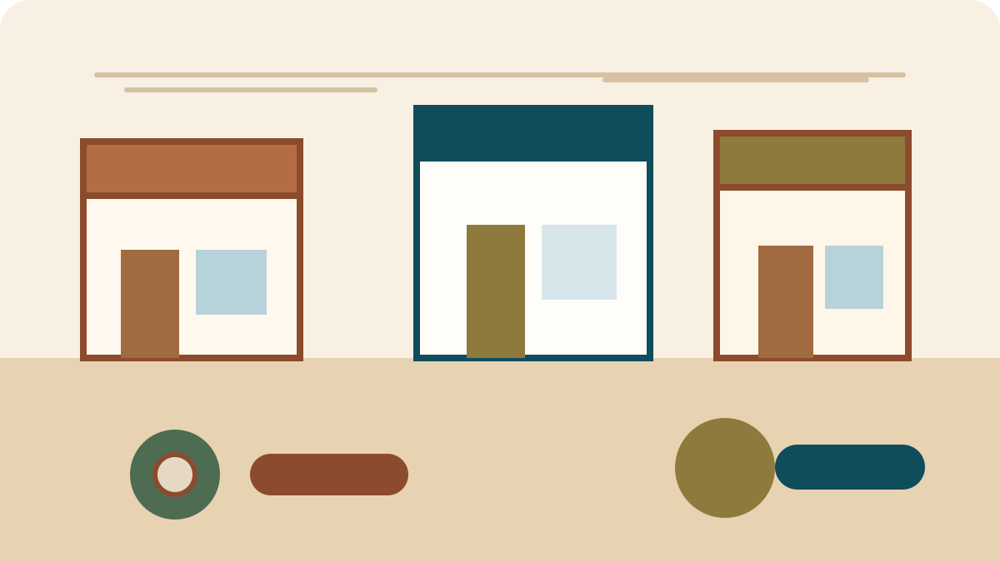

Discover Jarrell.Grow local.
Connect with trusted local businesses or build a stronger, professional online presence that serves your community.

What do you need today?
Start with the essentials. Six useful paths into Jarrell’s growing local directory.
Eat and drink
Local meals, coffee and everyday favorites.
Home services
Practical help for repairs, yards and projects.
Automotive
Maintenance and repair close to home.
Health and wellness
Care, movement and everyday wellbeing.
Shopping
Local goods, gifts and useful finds.
Professional services
Clear local expertise for work and life.
Local profiles, thoughtfully presented.
Preview profiles show the directory experience while real businesses are being added. No ratings, reviews or invented claims.
Your business deserves more than a Facebook page.
Clear, practical websites and local visibility tools that help people find you, understand you and take the next step.
See business servicesWebsite design
A professional home for your business.
Local visibility
Make it easier to get discovered.
Booking and quote tools
Turn interest into useful requests.
Ongoing support
Practical help after launch.

Built here. Built for Jarrell.
JarrellTX.co connects residents with local businesses and helps those businesses present themselves professionally online. It’s locally operated, intentionally useful and designed to grow with the community.
Read our storyFind what you need. Or help your business get found.
Explore Jarrell’s directory or tell us what a stronger online presence could do for your business.